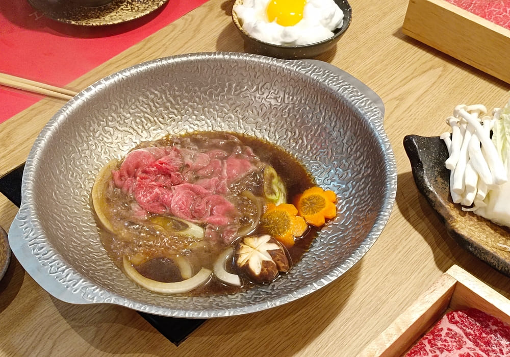
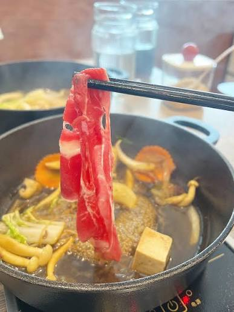

อิ่มจุก ๆ คุ้มเกินต้าน
สายสุกี้ห้ามพลาดด้วยประการทั้งปวงครับ! คุโรบูตะ สุกี้ขั้นเทพ เป็นร้านที่คุ้มค่ามาก จุดเด่นคือน้ำซุปสุกี้ยากี้ญี่ปุ่น (ซุปดำ) ที่เคี่ยวจนหวานเค็มกำลังดี จุ่มเนื้อหมูคุโรบูตะสไลด์บาง ๆ ลงไปแป๊บเดียว แล้วนำขึ้นมาจิ้มกับไข่ดิบเกรดทานสดได้ ละลายในปากฟินสุด ๆ ครับ